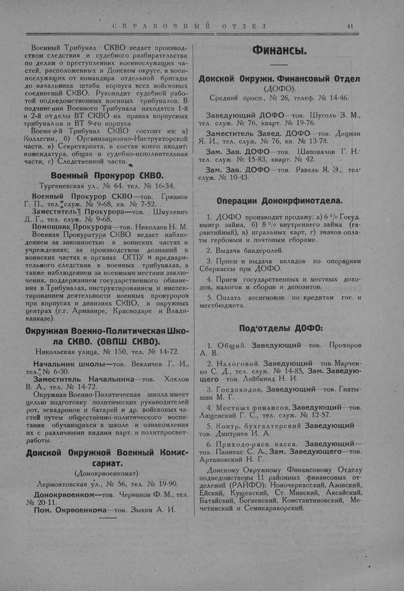

Лист источника 91
Скан

Распознанный текст
СПРАВОЧНЫЙ ОТДЕЛ 41
Военный Трибунал СКВО ведает производ-
ством следствия и судебного разбирательства
по делам о преступлениях военнослужащих ча-
стей, расположенных в Донском округе, и воен-
нослужащих от командира отдельной бригады
до начальника штаба корпуса всех войсковых
соединений СКВО. Руководит судебной рабо-
той подведомственных военных трибуналов. В
подчинении Военного Трибунала находятся 1-й
и 2-й отделы ВТ СКВО на правах корпусных
трибуналов и ВТ 9-го корпуса.
Военный Трибунал СКВО состоит из: а)
Коллегии, б) Организационно-Инструкторской
части, в) Секретариата, в состав коего входят:
комендатура, общая и судебно-исполнительная
части, г) Следственной части.
Военный Прокурор СКВО.
Тургеневская ул., № 64. тел. № 16-34.
Военный Прокурор СКВО—тов. Грязнов
Г. П., тел. служ. № 9-68, кв. № 7-52.
Заместитель Прокурора—тов. Шмулевич
Д. Г., тел. служ. № 9-68.
Помощник Прокурора—тов. Николаев Н. М.
Военная Прокуратура СКВО ведает наблю-
дением за законностью в воинских частях и
учреждениях; за производством дознаний в
воинских частях и органах ОГПУ и предвари-
тельного следствия в военных трибуналах, а
также наблюдением за военными местами заклю-
чения, поддержанием государственного обвине-
ния в Трибуналах, инструктированием и инспек-
тированием деятельности военных прокуроров
при корпусах и дивизиях СКВО, в окружных
центрах (г.г. Армавире, Краснодаре и Влади-
кавказе).
Окружная Военно-Политическая Шко-
ла СКВО. (ОВПШ СКВО).
Никольская улица, № 150, тел. № 14-72.
Начальник школы—тов. Векличев Г. И.,
тел. № 6-30.
Заместитель Начальника—тов. Хохлов
В. А., тел. № 14-72.
Окружная Военно-Политическая школа имеет
целью подготовку политических руководителей
рот, эскадронов и батарей и др. войсковых ча-
стей путем общественно-политического воспи-
тания обучающихся в школе и ознакомления
их с различными видами парт. и политпросвет-
работы.
Донской Окружной Военный Комис-
сариат.
(Донокрвоенкомат).
Лермонтовская ул., № 56, тел. № 19-90.
Донокрвоенком—тов. Черников Ф. М., тел.
№ 20-11.
Пом. Окрвоенкома—тов. Зыкин А. И.
Финансы.
Донской Окружн. Финансовый Отдел
(ДОФО).
Средний просп., № 26, телеф. № 14-46.
Заведующий ДОФО—тов. Шуголь З. М.,
тел. служ. № 76, кварт. № 19-76.
Заместитель Завед. ДОФО—тов. Дицман
Я. И., тел. служ. № 76, кв. № 13-78.
Зам. Зав. ДОФО—тов. Шаповалов Г. Н.
тел. служ. № 15-83, кварт. № 42.
Зам. Зав. ДОФО—тов. Равель Я. Э., тел.
служ. № 10-43.
Операции Донокрфинотдела.
1. ДОФО производит продажу: а) 6% Госуд.
выигр. займа, б) 8% внутреннего займа (га-
рантийный), в) игральных карт, г) знаков опла-
ты гербовым и почтовым сборами.
2. Выдача бандеролей.
3. Прием и выдача вкладов по операциям
Сберкассы при ДОФО.
4. Прием государственных и местных дохо-
дов, налогов и сборов и депозитов.
5. Оплата ассигновок по кредитам гос. и
местбюджета.
Под'отделы ДОФО:
1. Общий. Заведующий тов. Прохоров
А. В.
2. Налоговой. Заведующий—тов. Марчен-
ко С. Д., тел. служ. № 14-85, Зам. Заведую-
щего тов. Лейбкинд Н. И.
3. Госдоходов, Заведующий—тов. Гнаты-
шин М. Г.
4. Местных финансов, Заведующий—тов.
Лащевский Г. С., тел. служ. № 12-57.
5. Контр. бухгалтерский Заведующий—
тов. Дмитриев И. А.
6. Приходо-расх. касса. Заведующий—
тов. Паникас С. А., Зам. Заведующего—тов.
Артановский Н. Г.
Донскому Окружному Финансовому Отделу
подведомствены 11 районных финансовых от-
делений (РАЙФО): Новочеркасский, Азовский,
Ейский, Кущевский, Ст. Минский, Аксайский,
Батайский, Богаевский, Константиновский, Ме-
четинский и Семикаракорский.